LauraStar Go
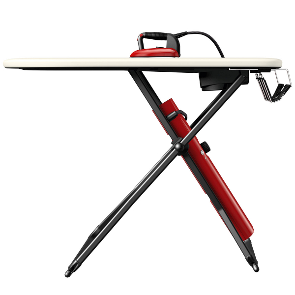Laurastar — мировой лидер в создании профессиональных гладильных систем для домашнего использования. Многофункциональный комплекс состоит из уникальной активной гладильной доски, оснащённой вентилятором и вакуумной системой для предотвращения нежелательных складок, встроенного парогенератора и профессионального утюга — ещё одного важного элемента от Laurastar. Теперь профессиональный уход за тканями и превосходный результат доступен всем, кто ценит красивую одежду и хочет сохранить ее безупречный вид.
Быстрое время нагревания и автоматическое отключение
LauraStar Go нагревается за 8 минут и это при объёме бойлера в 800 мл. А если вы забыли выключить гладильную систему, то она выключится автоматически после 10 минут нахождения без действия, для вашей безопасности и экономии энергии.
Высокотемпературный мелкодисперсный пар


Клапан в бойлере открывается при нагреве пара до 150°C, далее двигаясь по трубке к утюгу, он остывает до 120°C. В подошве утюга LauraStar находится запатентованный паровой лабиринт длинной 1,5 метра, который подогревает пар до 150°C, параллельно увеличивая его в объёме на 170%. На выходе получается, рассеивающий, ультратонкий, но мощный пар, который адаптируется под все виды тканей и позволяет отпаривать вещи вертикально. Преимущество сухого пара заключается в том, что он способен проникать в глубь белья, эффективно разглаживая даже самые сильные замятия.
Постоянная подача пара
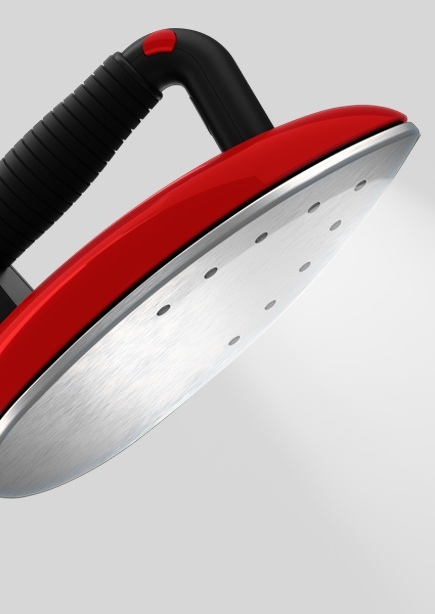Объём бойлера в гладильной системе LauraStar Go - 800 мл. Данный объём рассчитан примерно на 60-70 минут. Важно: доливать воду во время использования системы LauraStar Go нельзя, поэтому обязательно доливайте воду в систему до начала глажения с помощью специального аксессуара.
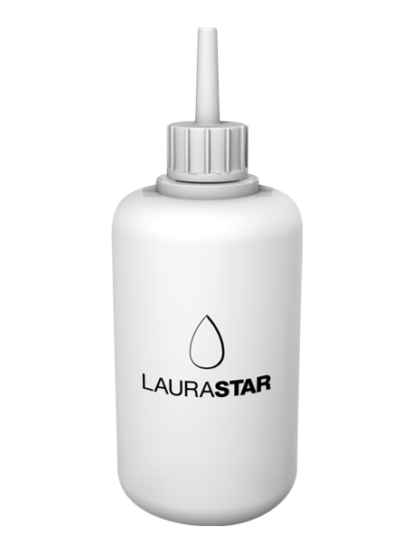Постоянное давление пара 3.5 БАР

LauraStar указывает профессиональную характеристику - постоянное давление пара на выходе из утюга - 3.5 бар. и производит 200 литров пара в минуту.
Облегченный профессиональный утюг
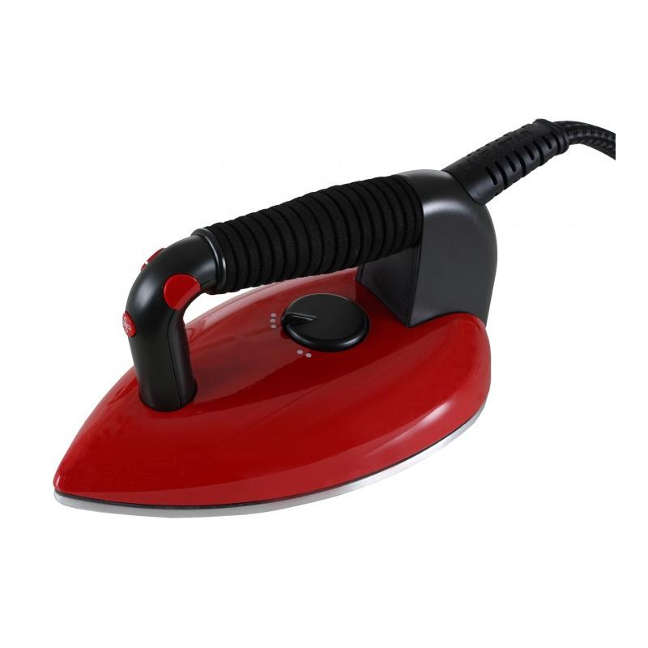Гладильная система LauraStar Go, комплектуется профессиональным облегченным утюгом, выполненным из композитных материалов, для более комфортного и менее затруднительного процесса глажения. Эргономичная пробковая ручка, с антибактериальным покрытием, позволяет удобно удерживать утюг и не вызывает затекания даже после долгого использования. Кнопки для подачи пара располагаются с двух сторон, чтобы глажение было комфортным для правшей и левшей. Вес утюга – 1 кг.
Профессиональная подошва форма материал
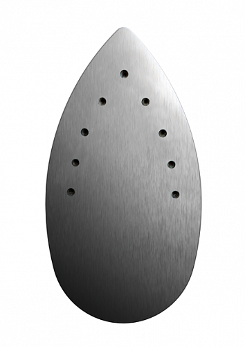Подошва утюга сделана в форме капли, что повышает эффективность глажения исключая замятия ткани. Материал подошвы - алюминий, как во всех профессиональных станциях. Алюминий быстро набирает необходимую температуру и максимально равномерно поддерживает её по всей подошве. Стойкие пятна можно удалить с помощью абразивной губки для посуды или специального очистителя подошвы – POLYFER. После этого удалите оксид алюминия с подошвы при помощи влажной тряпки. Отверстия для подачи пара, находятся в верхней части подошвы, таким образом проводя утюгом вперёд, Вы изначально увлажняете ткань, делая её более податливой и задней частью подошвы тут же высушиваете, запечатывая идеальный результат глажения.
Насадка для деликатных тканей SOFTPRESSING
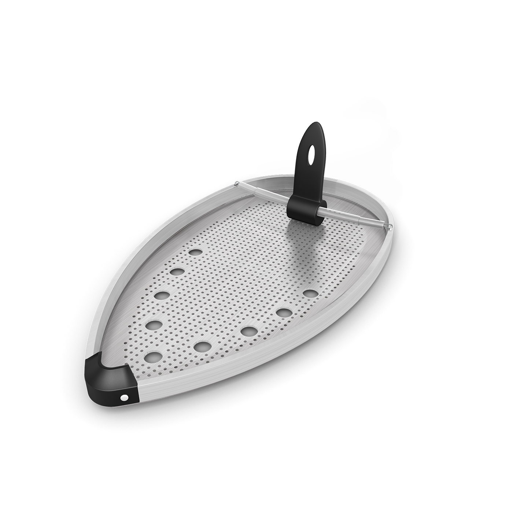Разработанная швейцарскими инженерами LauraStar, тефлоновая насадка защищает деликатные ткани и предотвращает появление блестящих следов на темных и костюмных тканях. Благодаря специальному покрытию, которое снижает температуру на поверхности подошвы утюга, насадка позволяет свободно гладить деликатные ткани, например, шелк, который чувствителен к нагреванию, пуговицы, бисер, прорезиненные наклейки. Тефлоновая насадка легко надевается на утюг. Вставьте переднюю часть утюга в носик насадки под проволочную перегородку, зафиксируйте утюг в насадке, слегка прижав. Подождите примерно 1 минуту, пока насадка не достигнет нужной температуры для деликатного глажения. Профессиональные системы, никогда не используют антипригарного напыления на подошве, так как оно достаточно быстро царапается, и приходит в негодность.
Профессиональная технология «ХОЛОДНОЕ ГЛАЖЕНИЕ»
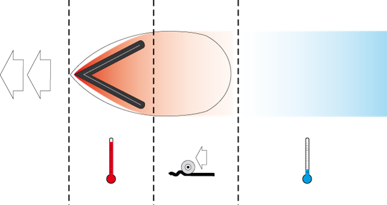Благодаря тому, что размер частиц пара в LauraStar очень мелкий, он практически не задерживается на гладильной доске, поэтому в отличие от «конкурентов» в активных досках LauraStar не используется нагревательный элемент для испарения конденсата. Это позволяет проглаженные вещи, продувать прохладным воздухом обеспечивая эффект «холодного глажения». Холодный поток воздуха запечатывает результат глажения. Теперь можно надевать только что проглаженные вещи.
Активный гладильный стол
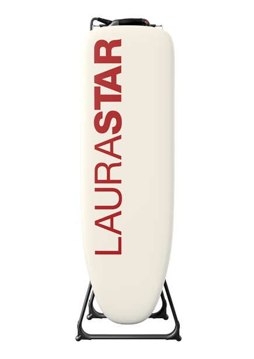Гладильная доска с запатентованной технологией MAGiiС™ позволяет работать в двух режимах ПОДДУВ и ВАКУУМ. Режим ПОДДУВ расправляет вещи на гладильной доске, позволяя избежать отпечатывания швов. Режим ВАКУУМ фиксирует вещи на доске для разглаживания стрелок, плиссе, легких вещей из шелка без усилий.
Управление вентилятором
С помощью кнопки на ручке утюга можно управлять работой вентилятора, встроенного в гладильную систему, и легко переключать режимы одной рукой. Переключение между режимами «ПОДДУВ» и «ВАКУУМ», происходит коротким нажатием кнопки вентилятора на утюге.
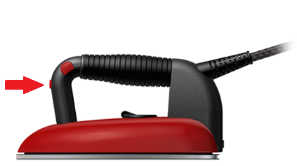Регулирование высоты доски
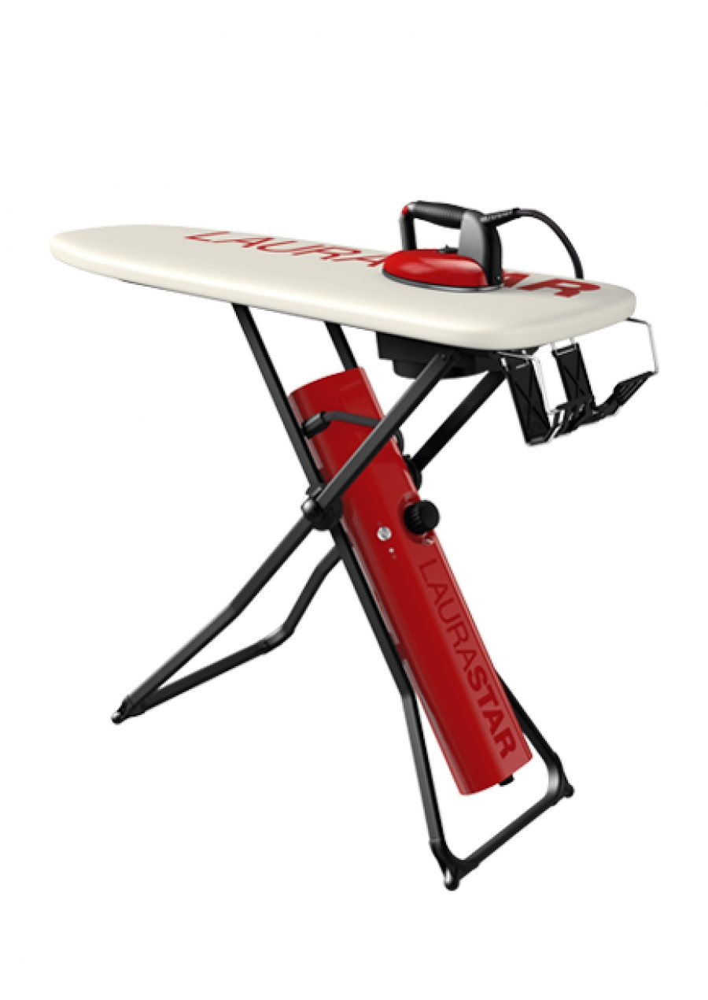Гладильная система LauraStar Go может быть установлена на одном из 3 уровней высоты, от 79 до 95 см.
Удобство использования и хранения
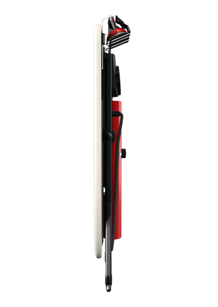Гладильная система LauraStar Go легко перемещается благодаря двум парам колес и занимает небольшое пространство шириной 18 см в сложенном состоянии. При этом весь комплекс благодаря запатентованному механизму открывания и складывания может быть убран для хранения в одно мгновение. Отсек для хранения, встроенный в конструкцию гладильной доски, позволяет хранить даже горячий утюг.
Силиконовый коврик
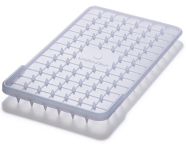Специальный изолирующий коврик позволяет безопасно ставить горячий утюг на термостойкую подставку, располагая её там, где Вам удобно. Горизонтальное хранение утюга является более устойчивым, а как следствие и более безопасным. Силиконовый коврик удобно хранится под утюгом в сложенном состоянии.
Держатель провода
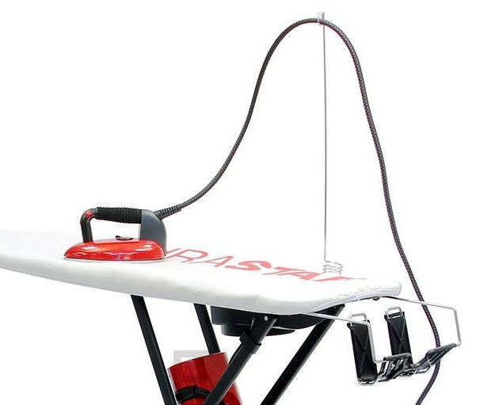Гладильная система LauraStar Go, комплектуется специальным держателем провода. Закрепив паропровод в держатель, вы обеспечиваете свободное передвижение утюга по всей рабочей поверхности доски, при этом паропровод не будет касаться белья.
Поддон для слива воды
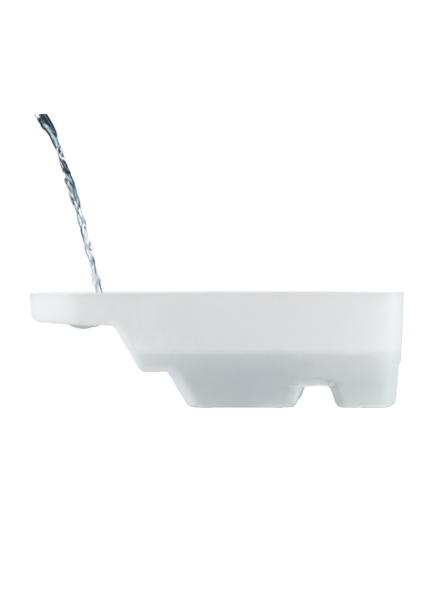Удобный, комфортный и практичный поддон для слива воды. С его помощью можно быстро и легко освободить бойлер и промыть его. Ненужные примеси будут скапливаться в поддоне.
Технические характеристики
Мощность: 1800 Вт
Давление пара: 3.5 бар
Объем емкости для воды: 0.8 л
Время нагрева: 8 минут
Длина парового шнура: 2.1 м
Длина шнура: 2 м
Высота доски, 3 положения: 79-95 см
Размеры в сложенном состоянии (ДхШхВ): 130х39х18 см
Вес гладильной системы: 12,7 кг
Цвет: красный
Страна изготовитель: Португалия